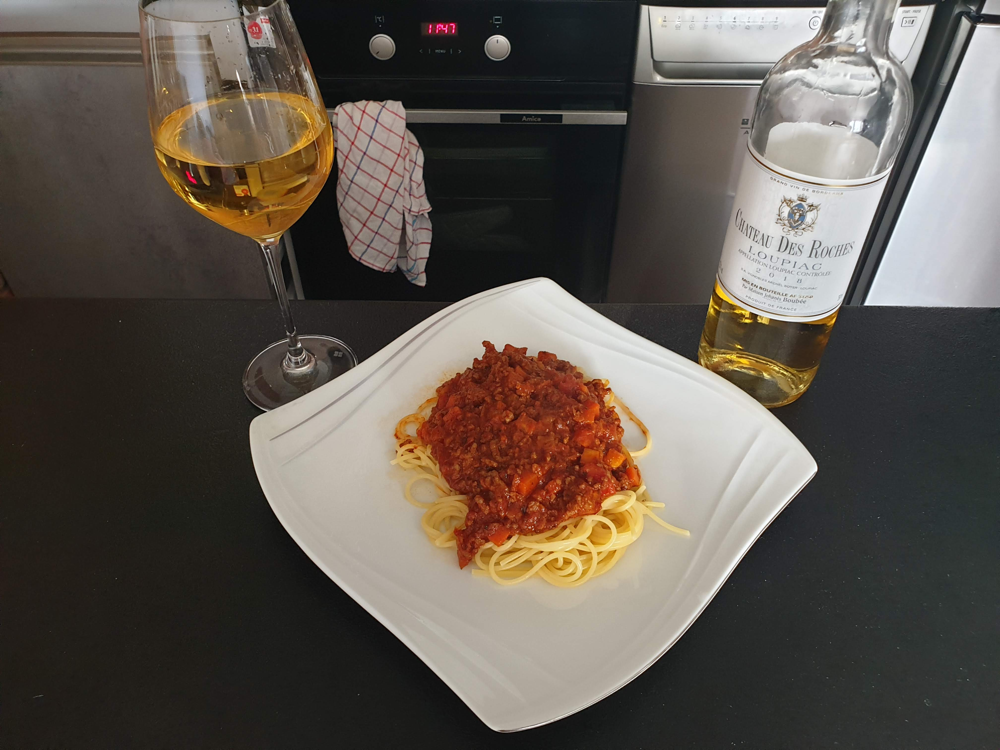

Spaghetti we are gonna make today is my go-to comfort food.
It's easy to make, delicious to taste and soothes your soul.
Wine is optional, but it's highly recommended!
Now! To the fun part!
Fun fact! In France combination of celery, carrot and onion is called mirepoix
and is used as base for many soups and sauces.
Dice celery, carrots and onions. Sear them first in pan, then lower the heat and add olive olive.
Fry until onions become transparent and gold.
Add minced meat and once again - sear it first and then lower the heat. Add salt and pepper. Don't panic if something will stick to the pan.
We will deal with it in next step.
Pour yourself a glass of wine and then some into the pan. It will unstick the flavourfull residue from the pan.
Now lower the heat and wait untill wine evaporates.
Add diced tomatoes and cook it for 5 minutes. Then add basil and lower the heat. Mix everything from time to time.
Now you have to lower the heat to almost minimum (2-3/10). Leave it on stove for up to 8 hours.
Check on it from time to time.
Now you can serve it with al-dente cooked pasta. Bon appetit!